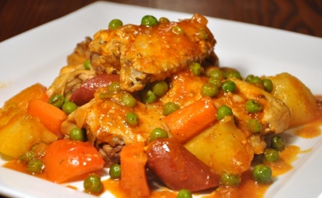
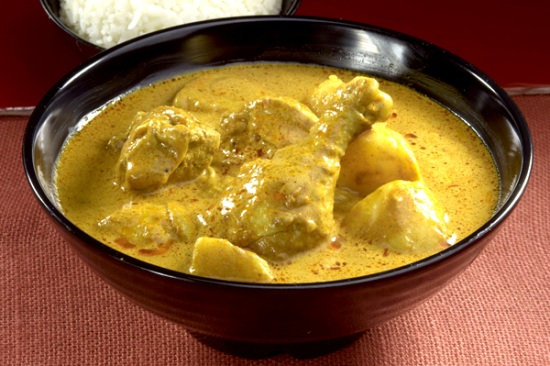

PINASarap Recipes
Chicken-Afritada
Ingredients:
- Chicken, cut into serving pieces
- Large bell pepper, sliced
- Salt and ground black pepper to taste
Instructions:
- Pour-in cooking oil in a cooking pot or casserole then apply heat.
- Pan-fry the chicken until the color turns light brown (about 3 minutes per side).
- Remove the chicken from the cooking pot.
- On the same cooking pot, saute garlic and onions.
- Put-in the sliced hotdogs and pan-fried chicken then cook for a minute.
- Pour-in tomato sauce and chicken stock then add bay leaves. Simmer for 30 to 40 minutes.
- Add the potato and carrots then simmer for 7 minutes or until the vegetables are soft.
- Put-in the bell pepper, green peas, salt, sugar, and ground black pepper then cook for 3 minutes more.
- Turn-off heat then transfer to a serving plate.
- Serve hot. Share and enjoy!

Chicken Curry
Ingredients:
- Chicken, cut into serving pieces
- Celery, cut into 2 inches length
- Small red bell pepper, cut into cubes
Instructions:
- Pan-fry the potato and set aside
- Pan-fry the chicken and set aside
- In the pan where the chicken was pan-fried, saute the garlic, onion and ginger
- Add the pan-fried chicken, fish sauce, and curry powder
- Add water and simmer until the chicken is tender
- Put-in the red bell pepper, celery, and pan fried-potato then simmer for 5 minutes
- Add the coconut milk and mix well. Simmer for 5 minutes

Fish Steak
Ingredients:
- belly of milkfish, sliced
- medium yellow onion, sliced
- teaspoon chopped flat leaf parsley
Instructions:
- Heat the oil in a pan.
- Once the oil turns hot, fry the sliced milkfish belly until the color turns medium brown. Flip the fish to fry the other side.
- Remove the fish from the pan after frying. Discard most of the cooking oil from the pan leaving around 1 tablespoon of oil.
- On the same pan with little oil, cook the garlic until it turns light brown.
- Pour-in the soy sauce, water, and lemon juice. Stir.
- Add the fried fish. Cover and cook for 3 minutes.
- Add the onion, salt, and pepper. Stir. cover and cook for 2 to 5 minutes. You may add water if needed.
- Transfer to a serving plate.
- Top with chopped parsley.
- Serve hot. Share and enjoy!

Ginataang Hipon
Ingredients:
- long red chili or Thai chili, sliced
Instructions:
- Heat oil in a pan
- Saute onion, ginger, and garlic
- Add ground black pepper and fish sauce. Cook for 30 seconds.
- Pour-in coconut milk. Let boil and reduce to half. Note: this is done by letting coconut milk evaporate by boiling in medium heat in about 20 to 25 minutes/li>
- Put-in shrimps. Cook for 5 to 7 minutes.
- Add green and red chilies. Cook for 5 minutes
- Turn-off heat and then transfer to a serving plate
- Serve hot. Share and enjoy!

Kare-kare
Ingredients:
- oxtail (cut in 2 inch slices) you an also use tripe or beef slices
- banana flower bud (sliced)
- string beans (cut into 2 inch slices)
- seeds (soaked in a cup of water)
Instructions:
- In a large pot, bring the water to a boil
- ut in the oxtail followed by the onions and simmer for 2.5 to 3 hrs or until tender (35 minutes if using a pressure cooker)
- Once the meat is tender, add the ground peanuts, peanut butter, and coloring (water from the annatto seed mixture) and simmer for 5 to 7 minutes
- Put-in the vinegar and simmer for 12 to 15 minutes.
- Add the toasted ground rice and simmer for 5 minutes
- On a separate pan, saute the garlic then add the banana flower, eggplant, and string beans and cook for 5 minutes
- Transfer the cooked vegetables to the large pot (where the rest of the ingredients are)
- Serve hot. Share and enjoy!
2